Activity Diagram (beta)
Current syntax for activity diagram has several limitations and
drawbacks (for example, it's difficult to maintain).
So a completely new syntax and implementation is proposed as beta version to users (starting with V7947), so that
we could define a better format and syntax.
Another advantage of this new implementation is that it's done without the need of having
Graphviz installed (as for sequence diagrams).
The new syntax will replace the old one. However, for compatibility reason, the old syntax will still
be recognized, to ensure ascending compatibility.
Users are simply encouraged to migrate to the new syntax.
Simple Activity
Activities label starts with : and ends with ;.
Text formatting can be done using creole wiki syntax.
They are implicitly linked in their definition order.
@startuml
:Hello world;
:This is on defined on
several **lines**;
@enduml
|
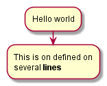 |
Start/Stop
You can use start and stop keywords to denote the
beginning and the end of a diagram.
@startuml
start
:Hello world;
:This is on defined on
several **lines**;
stop
@enduml
|
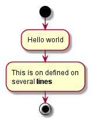 |
Conditional
You can use if, then and else keywords to put tests if your diagram.
Labels can be provided using parentheses.
@startuml
start
if (Graphviz installed?) then (yes)
:process all\ndiagrams;
else (no)
:process only
__sequence__ and __activity__ diagrams;
endif
stop
@enduml
|
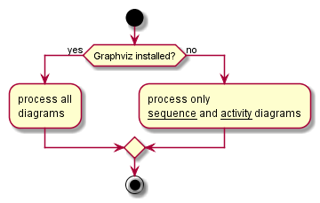 |
You can use the elseif keyword to have several tests :
@startuml
start
if (condition A) then (yes)
:Text 1;
elseif (condition B) then (yes)
:Text 2;
stop
elseif (condition C) then (yes)
:Text 3;
elseif (condition D) then (yes)
:Text 4;
else (nothing)
:Text else;
endif
stop
@enduml
|
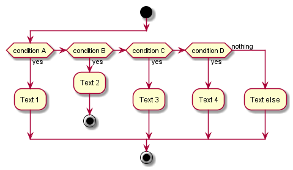 |
Repeat loop
You can use repeat and repeatwhile keywords to have repeat loops.
@startuml
start
repeat
:read data;
:generate diagrams;
repeat while (more data?)
stop
@enduml
|
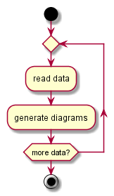 |
While loop
You can use while and end while keywords to have repeat loops.
@startuml
start
while (data available?)
:read data;
:generate diagrams;
endwhile
stop
@enduml
|
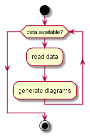 |
It is possible to provide a label after the endwhile keyword, or using the is keyword.
@startuml
while (check filesize ?) is (not empty)
:read file;
endwhile (empty)
:close file;
@enduml
|
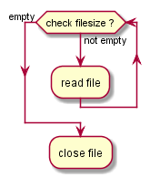 |
Parallel processing
You can use fork, fork again and end fork keywords to denote parallel processing.
@startuml
start
if (multiprocessor?) then (yes)
fork
:Treatment 1;
fork again
:Treatment 2;
end fork
else (monoproc)
:Treatment 1;
:Treatment 2;
endif
@enduml
|
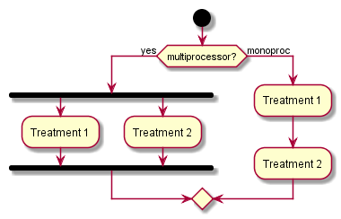 |
Notes
Text formatting can be done using creole wiki syntax.
@startuml
start
:foo1;
note left: This is a note
:foo2;
note right
This note is on several
//lines// and can
contain <b>HTML</b>
====
* Calling the method ""foo()"" is prohibited
end note
stop
@enduml
|
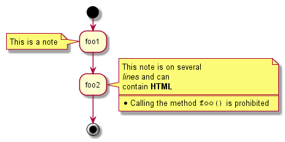 |
Title & Legend
You can add title, header, footer, legend to a diagram:
@startuml
title this is my title
if (condition?) then (yes)
:yes;
else (no)
:no;
note right
this is a note
end note
endif
stop
legend
this is the legend
endlegend
footer dummy footer
header
this is
a long __dummy__ header
end header
@enduml
|
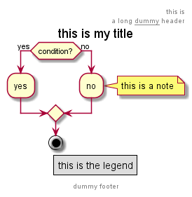 |
Colors
You can use specify a color for some activities.
@startuml
start
:starting progress;
#HotPink:reading configuration files
These files should edited at this point!;
#AAAAAA:ending of the process;
@enduml
|
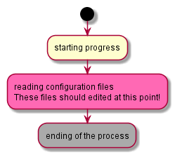 |
Arrows
Using the -> notation, you can add texts to arrow, and change
their color.
@startuml
:foo1;
-> You can put text on arrows;
if (test) then
-[#blue]->
:foo2;
-[#green]-> The text can
also be on several lines
and **very** long...;
:foo3;
else
-[#black]->
:foo4;
endif
-[#gray]->
:foo5;
@enduml
|
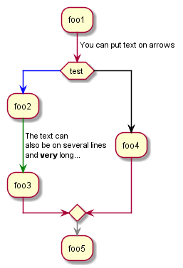 |
Grouping
You can group activity together by defining partition:
@startuml
start
partition Initialization {
:read config file;
:init internal variable;
}
partition Running {
:wait for user interaction;
:print information;
}
stop
@enduml
|
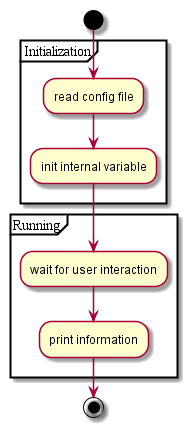 |
Swimlanes
Using pipe |, you can define swimlanes.
It's also possible to change swimlanes color.
@startuml
|Swimlane1|
start
:foo1;
|#AntiqueWhite|Swimlane2|
:foo2;
:foo3;
|Swimlane1|
:foo4;
|Swimlane2|
:foo5;
stop
@enduml
|
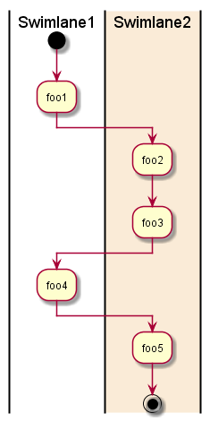 |
Detach
It's possible to remove an arrow using the detach keyword.
@startuml
:start;
fork
:foo1;
:foo2;
fork again
:foo3;
detach
endfork
if (foo4) then
:foo5;
detach
endif
:foo6;
detach
:foo7;
stop
@enduml
|
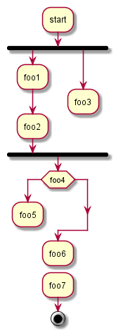 |
SDL
By changing the final ; separator, you can set different rendering for the activity:
@startuml
:Ready;
:next(o)|
:Receiving;
split
:nak(i)<
:ack(o)>
split again
:ack(i)<
:next(o)
on several line|
:i := i + 1]
:ack(o)>
split again
:err(i)<
:nak(o)>
split again
:foo/
split again
:i > 5}
stop
end split
:finish;
@enduml
|
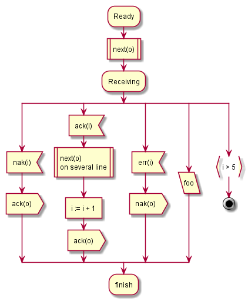 |
Complete example
@startuml
start
:ClickServlet.handleRequest();
:new page;
if (Page.onSecurityCheck) then (true)
:Page.onInit();
if (isForward?) then (no)
:Process controls;
if (continue processing?) then (no)
stop
endif
if (isPost?) then (yes)
:Page.onPost();
else (no)
:Page.onGet();
endif
:Page.onRender();
endif
else (false)
endif
if (do redirect?) then (yes)
:redirect process;
else
if (do forward?) then (yes)
:Forward request;
else (no)
:Render page template;
endif
endif
stop
@enduml
|
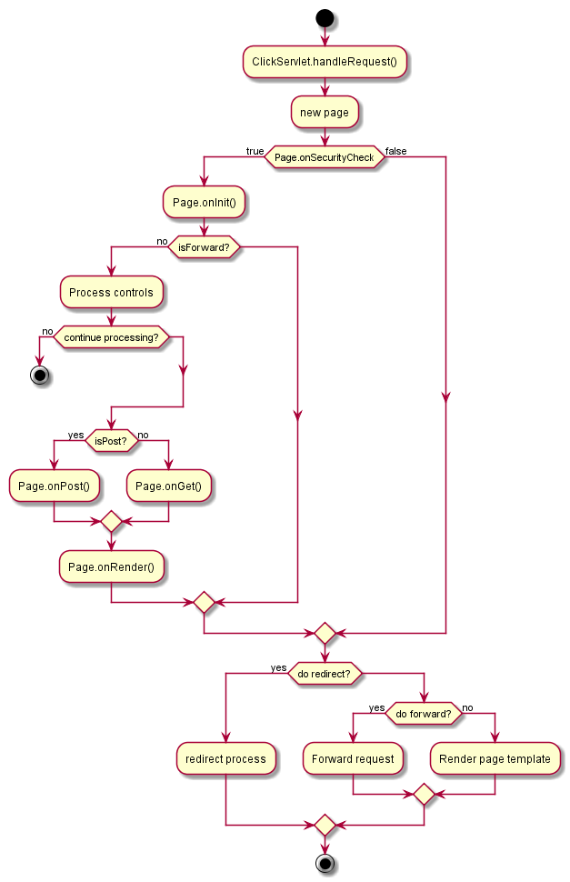 |